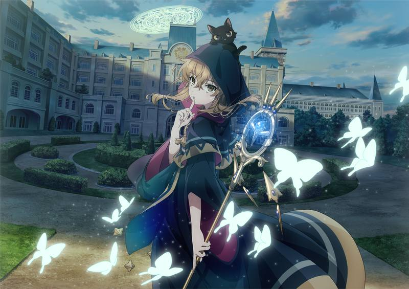
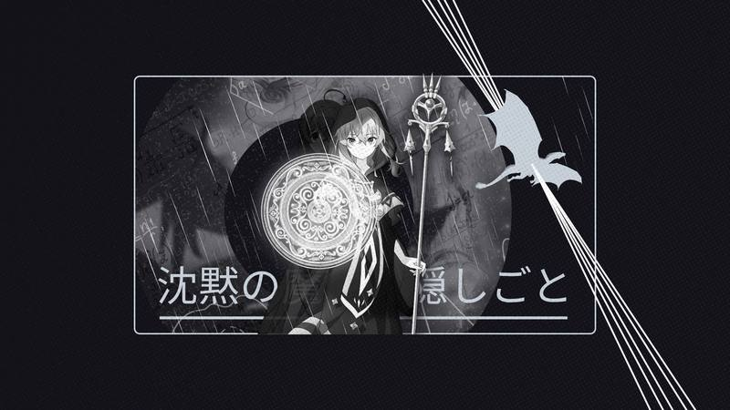
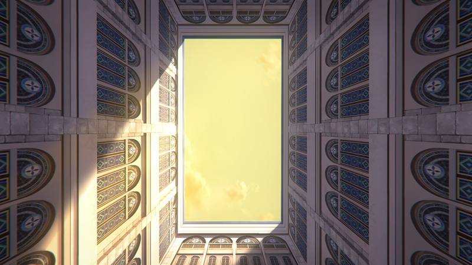

Monica Everett — 16 → 17 · Light-brown braids · Gold-eyed cat Nero
Name / Alias
Monica Everett (モニカ・エヴァレット)
Alias undercover: Monica Norton — murid pindahan Serendia Academy
Age · Birthday
16 di awal cerita → 17 (Vol.5+)
Day 1, first week of Shelgria ≈ 1 Desember
Title & Rank
Silent Witch — anggota termuda Seven Sages (diangkat umur 15)
Gelar bangsawan: Magic Count (setara Count, non-hereditary)
Familiar
Nero — kucing hitam mata emas
sebenarnya Black Dragon of Worgan yang dikalahkan Monica
About — Sang Penyihir Pendiam
Monica adalah keajaiban yang canggung: jenius sihir yang mengalahkan Black Dragon of Worgan sendirian, tapi tidak bisa memperkenalkan diri tanpa mau pingsan. Trauma kehilangan ayah (Benedict Reyn) dan masa kecil yang keras membuatnya lari ke "dunia angka yang indah" — tempat yang aman.
Karena fobia sosialnya, ia mencari cara agar tidak perlu chanting di depan orang. Dari situlah lahir Unchanted Magecraft — sihir tanpa mantra yang sebelumnya dianggap mustahil bagi manusia. Lebih dari 80% formula kini bisa ia pakai tanpa suara, bahkan saat ia sibuk menghitung deret Fibonacci di kepala.
Setelah diangkat jadi Sage, ia hidup menyendiri di kabin gunung bersama Nero — sampai Louis Miller (Barrier Mage) memaksanya menjalankan misi rahasia: menyusup ke Serendia Academy untuk diam-diam menjaga Pangeran kedua Felix Arc Ridill.
Abilities
Unchanted Magecraft
Manusia normal butuh chant beberapa detik. Monica: 0 detik. Ia memangkas incantation sampai tidak ada.
~80% formula tanpa chantMatematika & Kalkulasi
Mengoreksi laporan keuangan sekilas, mengenali orang dari golden ratio tubuh, memojokkan Elliot di catur dalam menit.
Rewrite & Counter
Membalikkan serangan lawan, menulis ulang barrier Louis yang butuh sebulan — dalam 1 menit.
Summon — Sheffield
Memanggil King of Wind Spirits, Sheffield. Tekanan anginnya menyibak awan, merontokkan puluhan naga.
Personality
Pemalu ekstrem, gugup, sering mual/pingsan saat bertemu orang baru. Tidak bisa menolak permintaan, tidak bisa berbohong dengan baik.
Tapi ketika menyentuh angka & formula: fokus total, dunia sekitar menghilang. Di balik tudung jubahnya, ada ketekunan yang keras kepala.
Jubah Sage-nya berdebu, tongkatnya jadi jemuran — ia tak peduli gelar. Namun saat bertugas sebagai Sage, keseriusannya membuat semua orang terdiam.
Likes & Quirks
- Fibonacci & deret angka — cara mengingat ayahnya
- Lagu favorit: nursery rhyme "Uncle Sam's Pig"
- Pelajaran favorit: matematika & teori sihir
- Harta: coffeepot peninggalan ayah
- Nickname fans: "Bocchi the Witch"
VA: Saya Aizawa (JP) · Alejandra Reynoso (EN)
Current Mission — Serendia Academy
Masuk sebagai Monica Norton, tahun kedua (commoner adopted by House Norton). Secara resmi dia adalah attendant dari Isabelle Norton — yang diam-diam adalah fans berat Monica — dan ditarik jadi Treasurer OSIS.
Tugas: lindungi Felix dari konspirasi, tanpa ketahuan. Setelah arc Highest Council, ia pindah basis ke kota Sazandol, riset bareng Raul Roseberg (Thorn Witch) sambil support trading company Lana Colette.
Gallery
Ganti 3 file ini dengan foto Monica favoritmu (monica1/2/3.jpg). Kalau kosong, placeholder tetap aesthetic.


10 Things that make Monica, Monica
- Mengalahkan Black Dragon sendirian — lalu memeliharanya sebagai kucing
- Menguasai sihir tanpa suara karena takut ngomong di depan umum
- Menghafal orang lewat proporsi tubuh & golden ratio
- Pingsan saat wawancara Seven Sages — tetap lulus sebagai Sage termuda
- Jubah Sage berdebu, tongkat jadi jemuran baju
- Mengenali Felix dari jauh di malam hari tanpa penggaris
- Merewrite barrier sebulan jadi semenit
- Membuat 7-spell combo jadi 5 dengan 3 artifact
- Nyanyian favoritnya tentang babi Uncle Sam (deret angka!)
- Di balik diamnya: "Aku akan mencoba sedikit lebih lama."
Music
Ganti file di bawah dengan OST Favoritmu. Contoh: OP "Feel" / ED "mild days" — Hitsujibungaku, atau OST Yoshihisa Kato.
Tip: kalau tidak ada file, player tetap tampil tapi tidak memutar. Upload music.mp3 ke repo yang sama.